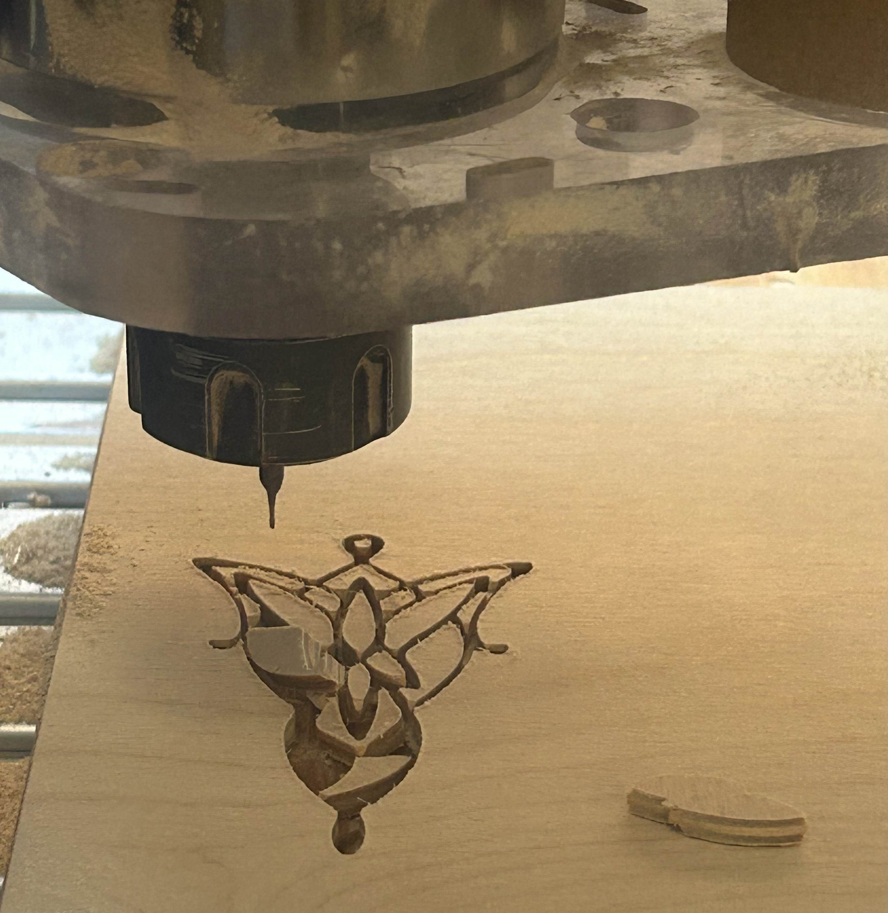
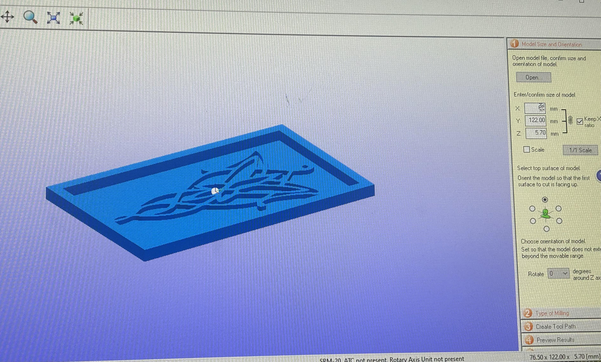
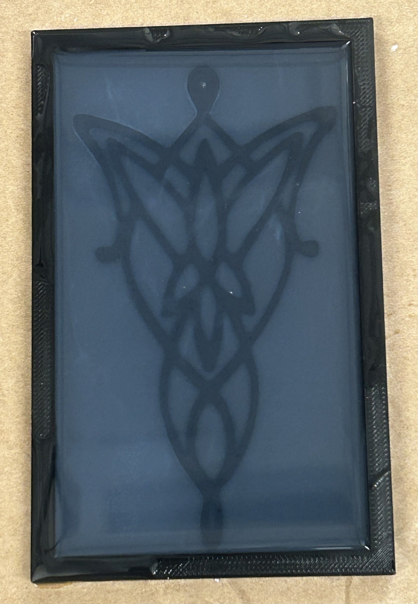

This week, we focused on CNC milling and molding & casting techniques. Our assignment was to design and manufacture an object using CNC machinery (either the ShopBot, Shaper, or SRM-20), and produce another item through molding and casting. I wanted to use this week to create items that would be useful in my everyday life.
I have been revamping my room decor lately and have really been wanting to include some Harry Potter decor. I decided to mill the Hogwarts castle into wood to display in my room. I also am planning on being Arwen for Halloween this weekend and so I wanted to create a mold of her iconic evenstar necklace.
First, I attempted CNC milling with the ShopBot. I wanted to spend more time this week learning how to operate the machinery so instead of creating a design on Fusion, I found the Hogwarts design online and converted it into an .svg file. I then imported this .svg file into Fusion, modified the dimensions, and then exported it to a .dxf file that you can access by clicking here!
I loaded my .dxf file into Aspire, modified the dimensions of the design, and also added the thickness of the wood I was cutting into. I obtained this measurement using calipers. The next part of preparing my design for cutting was pain-staking! Bobby showed me how to navigate to the pocket toolpath icon so I could carve my design as pocket cuts. Pocket cuts remove material from a specified area, creating a flat cavity with a defined depth and boundaries. The issue I ran into with my design early on resulted from its intricacy. I initially wanted to carve the Hogwarts design into the wood. However, Bobby and I realized that the pocket cuts could not be made because the dimensions I was working with were far too small and the machine could not fit in those tiny spaces to make the cuts properly. Thus, I decided to make my pocket cuts in the inverse way: I would essentially mill out the background, so that the Hogwarts design protruded outwards. I thought this design may even have a cooler effect than what I originally intended. I then set upon the tedious process of making pocket cuts throughout my design. I set the pocket cut depth pretty close to the total depth of the material.
Next, I set up the ShopBot for use. I secured my wood piece above the sacrificial layer using the plastic screw gun. I used the 1/8” drill bit to carve out the design. The program calculated a toolpath that would cut out the design. After zeroing my Z-axis, I then turned on the machine and began the cutting process!
This was the result:
I was very pleased with the way this came out as I was unsure how it would look having had to invert the way I was engraving my design. The only thing I didn’t like was that the color of the wood was a bit uneven across the design. However, since I wanted this to be colorful room decor, I thought I could remedy the issue by just painting it! I didn’t get to fully finish painting this week but here is the progress I have made:
I wanted to use the ShopBot to try and cut out my Evenstar necklace. I figured I could then vacuum form it to create my silicone mold. This is where I began running into problems! I once again found the Evenstar design online, converted it into an .svg file, and modified the dimensions on Fusion before exporting it to a .dxf file. You can access that here!
The issue with my evenstar design was again it’s intricacy and size. The lines were incredibly thin and the regions of space between the pieces I wanted to cut out were very tiny. As I was trying to make pocket cuts on Aspire, my design was not rendering fully because the drill bit could not capture all of the cuts. I tried changing the drill bit to 1/16” and the design still wouldn’t render, leading me to have to use the 1/32” drill bit to achieve my complete design.
I secured my new piece of wood and set up the machine in the same way and then began the process of cutting out my evenstar. So far so good, I thought...
Wrong! :( ... My design ended up breaking as the CNC cut into it too much:
I realized that the lack of space I was working with in my design made the ShopBot unideal to work with and so I moved onto trying the SRM-20.
I wanted to use the SRM-20 to try to make a wax mold of the evenstar. I went back into Fusion and edited my design to place a box around it and also extrude the evenstar. You can access the .stl file I used by clicking here!
I decided to just 3D print my .stl file to create the basis of my mold that I would pour silicone into. The 3D print took about 2 hours and came out like this:
With the 3D printed mold done, I moved on to casting my evenstar using silicone. I used Silicone Rubber Super Elastic Translucent 2-part silicone to cast a silicone mold from the 3D printed mold. I mixed parts A and B together in a 1:1 ratio following the instructions on the box. I used an equal volume, not weight, of parts A and B. I then sprayed mold release agent into my mold:
After these preparation steps, I poured my silicone into the mold, making sure to fill it up enough so that there was adequate volume above my design. I let the mold solidify overnight:
Next, I removed my silicone from the 3D printed mold and achieved a silicone mold of the Evenstar.
I decided to cast dry stone into my silicone mode to arrive at my final design. Per the directions on the dry stone recommending 20 parts water to the dry stone, I mixed about 26 grams of dry stone with 6 grams of water. I also added some blue acrylic paint to color my mixture. I then poured it into my mold:
After letting my mold sit overnight, this was the final product: